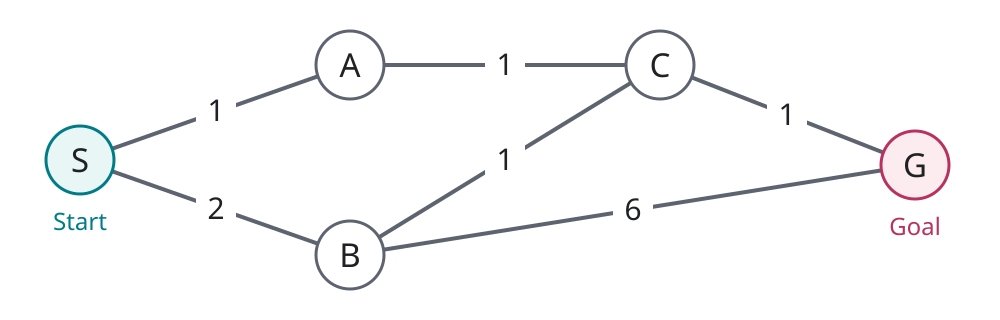
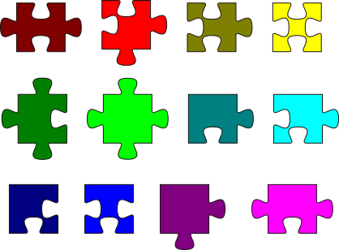
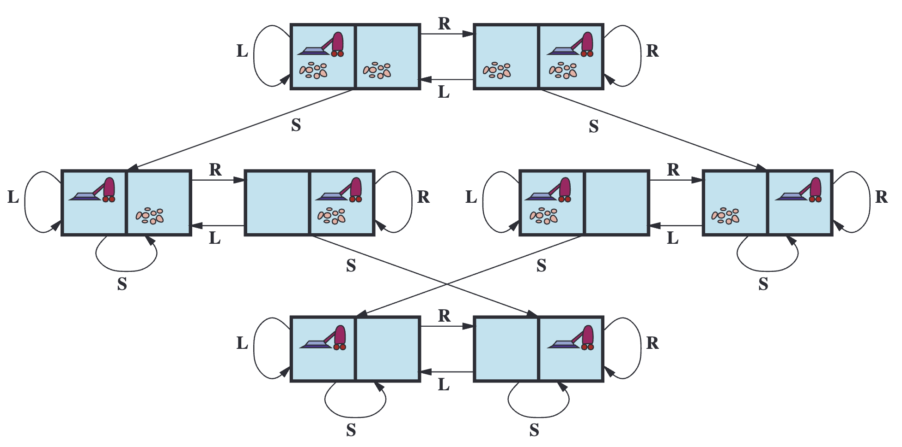
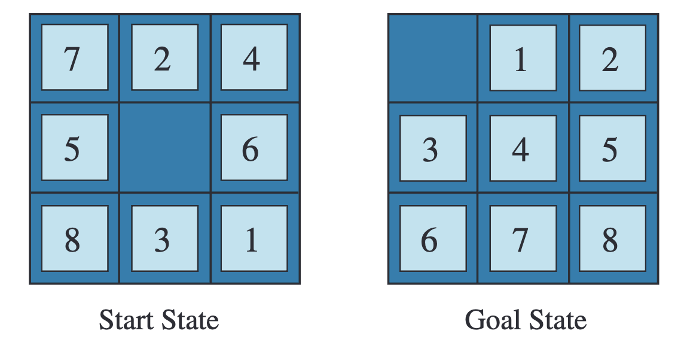
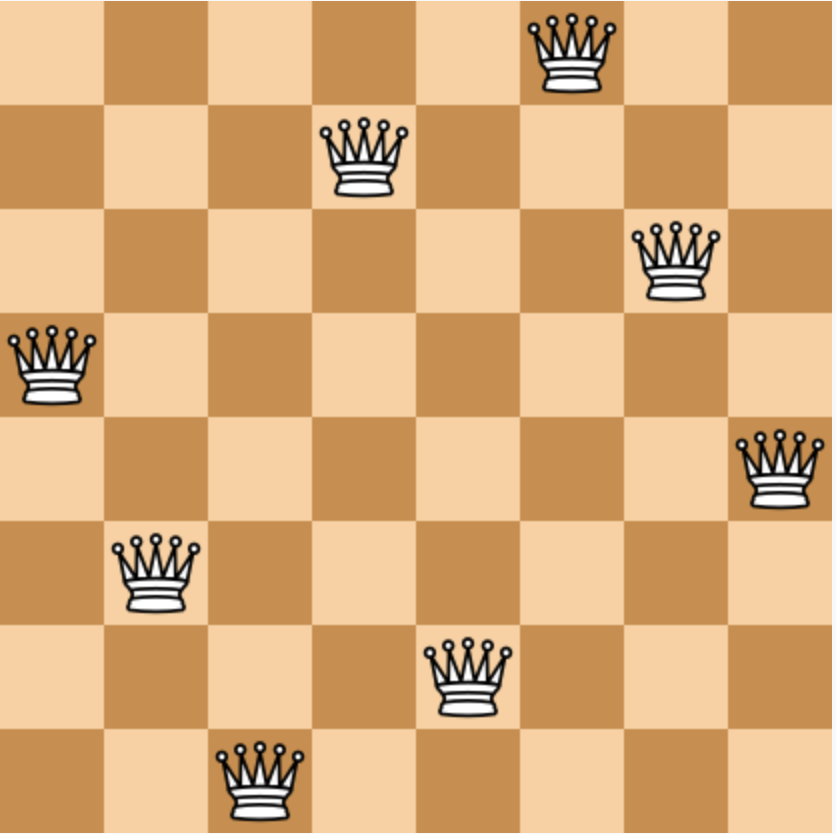
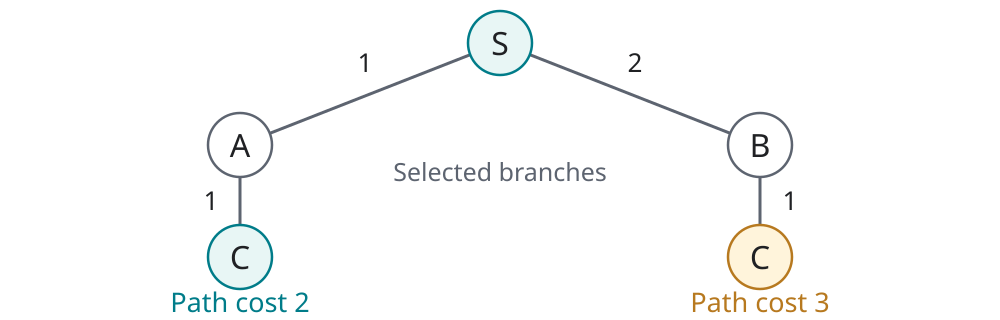

CS 463G & CS 663
(Intro to) AI
Lecture 4: Introduction to Search
Fall 2026
Which Route Would You Choose?
Start at S, reach the goal G. Road labels are travel times in minutes; roads work in both directions.

Would you prefer fewer roads, or less travel time? Are those the same objective?
Representation Comes Before Search
In artificial intelligence (AI), search is one way to choose actions by considering possible futures.
- Represent: What situations and actions matter?
- Search: Which action sequence reaches a goal?
- Execute: Carry out the selected actions.
An algorithm cannot fix a problem that was modeled incorrectly.

What Are We Assuming?
Recall the environment dimensions from Lecture 3.
| Assumption here | What it lets us do |
|---|---|
| Fully observable | Know the current state |
| Known, deterministic actions | Predict one next state for each action |
| Static during planning | Plan before executing the first action |
| Single agent | Ignore an opponent’s choices |
Under these assumptions, a solution can be a fixed sequence of actions.
Define the Search Problem
| Component | Question to answer |
|---|---|
| Initial state | Where does the agent start? |
| Available actions | Which choices are legal in each state? |
| Transition model | What state results from an action? |
| Goal test | Does this state satisfy the objective? |
| Action cost | What does each action cost? |
The state space contains the possible modeled states. The path cost is the sum of action costs along a path.
Turn the Map into a Problem
| Component | Our navigation task |
|---|---|
| State / initial state | Current location / S |
| Actions / transition | Take a neighboring road / arrive at its other end |
| Goal test | Is the current location G? |
| Action cost | Minutes written beside that road |
Shortest in Steps or Cheapest?
| Route | Number of actions | Total travel time |
|---|---|---|
| S → B → G | 2 | 2+6=8 minutes |
| S → A → C → G | 3 | 1+1+1=3 minutes |
With equal positive action costs, a route with the fewest actions is also a least-cost route.
What Must a State Remember?
A search state is a task-relevant summary, not a copy of the whole world.
- Plain road planning: current location may be enough.
- A locked door: location and whether you have the key.
- Limited battery: location and remaining charge.
Keep information that changes legal actions, outcomes, goal status, or future costs.
Pair Exercise: Pick Up a Package
A robot starts at Home, visits the Shop to pick up one package, and returns Home with it.
- Is current location alone a sufficient state?
- What is the initial state? What is the goal test?
- Specify the pickup action and its cost.
The robot starts at Home. Is the task already done?
A State Includes Package Status
\text{state}=(\text{location},\ \text{has package})
| Piece | Definition |
|---|---|
| Initial state | (\text{Home},\ \text{false}) |
| Pickup action | At Shop without package: change the flag to \text{true} |
| Goal test | Location is Home and package flag is \text{true} |
| Costs in this model | Each road traversal and pickup costs 1 |
A solution: Home → Junction → Shop → pick up → Junction → Home. Cost: 5.
Vacuum World: Count the States

- Vacuum location: A or B.
- Room A: clean or dirty.
- Room B: clean or dirty.
2\times 2\times 2=8\text{ states}
We will write a state as (\text{location},\ \text{A status},\ \text{B status}).
How many states satisfy “both rooms are clean”?
Two. The vacuum may finish in either room.
Vacuum Actions: L, R, and S
| Label | Full action name | Effect in this two-room model |
|---|---|---|
| L | Move Left | End in A; stay put if already in A |
| R | Move Right | End in B; stay put if already in B |
| S | Suck up dirt | Make the current room clean |
- Each action costs 1, even if nothing changes.
- Cleaning an already-clean room leaves the state unchanged.
- Goal: both rooms clean, regardless of vacuum location.
Specify actions with no effect too. Otherwise, two implementations may model different problems.
Work Through a Vacuum Plan
Initial state: (\text{A},\ \text{dirty},\ \text{dirty}).
| Step | Action | Resulting state | Cost so far |
|---|---|---|---|
| 0 | Start | (\text{A},\ \text{dirty},\ \text{dirty}) | 0 |
| 1 | Suck (S) | (\text{A},\ \text{clean},\ \text{dirty}) | 1 |
| 2 | Right (R) | (\text{B},\ \text{clean},\ \text{dirty}) | 2 |
| 3 | Suck (S) | (\text{B},\ \text{clean},\ \text{clean}) | 3 |
Could any solution cost less than 3 from this start?
No. Each dirty room needs a cleaning action, and reaching the other room needs at least one move.
Read the Vacuum State Graph

L = Left; R = Right; S = Suck. Nodes are states; arrows are actions. A loop returns to the same state.
The 8-Puzzle: Start and Goal
Slide a numbered tile into the empty square. Reach the specified target arrangement.

What is one action? Does “move left” describe a tile or the blank?
Make Puzzle Actions Unambiguous
| Component | Our 8-puzzle definition |
|---|---|
| State | Positions of all eight tiles and the blank |
| Actions | Move the blank up, down, left, or right when legal |
| Transition | Swap the blank with the adjacent tile in that direction |
| Goal test | Does the whole board match the target? |
| Action cost | 1 per swap |
How many legal actions are available with the blank in the center? In a corner?
Four in the center; two in a corner. The action set depends on the state.
Eight Queens: A Different Kind of Goal
- Place 8 queens on an 8\times 8 board.
- No two queens share a row, column, or diagonal.
- We care about a valid final arrangement, not travel distance.
Should an action place a queen anywhere, or only in a carefully chosen column?

A Better Representation Removes Work
Place queens one column at a time, from left to right.
| Choice | Candidate complete boards before attack checks |
|---|---|
| Any 8 distinct squares | \binom{64}{8}=4{,}426{,}165{,}368 |
| Exactly one queen per column | 8^8=16{,}777{,}216 |
The second representation rules out column conflicts automatically.
These counts are candidate boards, not valid solutions or the number of nodes an algorithm must visit.
Reject Impossible Partial Solutions
Suppose column 1 already has a queen in row 1. Where can the next queen go in column 2?
Pruning means discarding a branch that cannot lead to a valid solution.
With placement-only actions, adding more queens cannot repair an existing attack.
Same State, Different Search Nodes
A state describes a situation. A search node also records how we reached it.

A node n can store its state, parent node, last action, depth (actions so far), and path cost g(n).
Two nodes can describe the same state but have different paths and costs.
The Frontier: Discovered, Not Expanded
- Expand a node: generate children using its available actions.
- Frontier: nodes still waiting to be explored.
- Reached states: states already discovered, including those on the frontier.
Which frontier node should we choose next? That choice defines the search strategy.
A Common Search Skeleton
Python-style pseudocode for finding a reachable goal; helper operations are conceptual.
frontier = [Node(initial_state)]
reached = {initial_state}
while frontier:
node = choose_and_remove(frontier)
if is_goal(node.state):
return reconstruct_path(node)
for action in actions(node.state):
child = make_child(node, action)
if child.state not in reached:
reached.add(child.state)
frontier.append(child)
return failureThe selection rule changes exploration order. Finding the cheapest path also needs careful handling of better routes to known states.
Your Turn: Expand One More Node
After expanding S: frontier = [A, B], reached = {S, A, B}.
Now choose A, using the search skeleton from the previous slide.
- Which neighbors does A generate?
- Which one is already reached?
- What remains on the frontier? What is the new node’s cost?
Trace: Skip S, Add C
| Operation | Frontier | Reached states |
|---|---|---|
| Before selecting A | [A, B] | {S, A, B} |
| Remove A | [B] | {S, A, B} |
| Generate S; already reached | [B] | {S, A, B} |
| Generate C; add it | [B, C] | {S, A, B, C} |
The C node has parent A, depth 2, and cost g(C)=1+1=2.
Without a repeated-state check, a two-way road can create paths such as S → A → S → A → … forever.
Three Uninformed Search Strategies
Uninformed means no estimate of the remaining distance to the goal. The problem’s action costs may still be used.
| Abbreviation | Full name | Which node is selected next? |
|---|---|---|
| BFS | Breadth-First Search | Shallowest: fewest actions so far |
| DFS | Depth-First Search | Deepest along the current branch |
| UCS | Uniform-Cost Search | Smallest accumulated path cost |
Which strategy directly matches our objective of minimizing travel time?
UCS. It prioritizes cost, not the number of roads traveled.
Depth Limits and Repeated Searches
| Abbreviation | Full name | Idea |
|---|---|---|
| DLS | Depth-Limited Search | Depth-first search with a maximum number of actions |
| IDS | Iterative Deepening Search | Repeat depth-limited search with limits 0, 1, 2, … |
If the shallowest goal needs 3 actions:
\text{limit }0\ \longrightarrow\ 1\ \longrightarrow\ 2\ \longrightarrow\ 3
Reaching a depth limit is a cutoff, not proof that the full problem has no solution.
Informed Search Uses an Estimate
A heuristic h(n) estimates the remaining cost from node n to a goal. Example: straight-line distance in a distance-based road task.
| Strategy | Priority |
|---|---|
| Greedy Best-First Search | Smallest estimated remaining cost: h(n) |
| A* Search, pronounced “A-star” | Smallest f(n)=g(n)+h(n) |
- g(n): actual cost from the start along this node’s path.
- h(n): estimated remaining cost, in the same units.
- f(n): estimated total cost through this node.
Other Ways to Organize Search
| Family | Central idea | Example |
|---|---|---|
| Bidirectional search | Search from both ends and try to meet | Route with a known destination and usable reverse actions |
| Local search | Improve a candidate configuration | Move queens to reduce attacks |
| Adversarial search | Account for another player’s choices | Choose a chess move against an opponent |
The representation and the task determine which search approach makes sense.
How Do We Judge a Search Algorithm?
| Criterion | Question |
|---|---|
| Soundness | Is every returned answer a valid solution? |
| Completeness | Will it find a solution whenever one exists? |
| Optimality | Is the returned solution guaranteed least-cost? |
| Time complexity | How much computation is needed? |
| Space complexity | How much memory is needed? |
A route reaches G but takes 8 minutes when a 3-minute route exists. Is it valid? Is it optimal?
Why Search Gets Expensive
Let b be the branching factor (children per node) and d a depth measured in actions.
For a full tree with b=3 and no repeated-state pruning:
| Depth d | 0 | 1 | 2 | 3 | 10 |
|---|---|---|---|---|---|
| Nodes at that depth: b^d | 1 | 3 | 9 | 27 | 59,049 |
There are 88,573 nodes through depth 10, counting the root and all earlier levels too.
Better representations, pruning, and good search order can matter more than faster hardware.
Exit Check: Diagnose the Mistake
- A delivery robot stops immediately because it is already Home.
- A planner calls an 8-minute route “best” because it uses fewer roads.
- A search keeps exploring S → A → S → A → … .
1. Representation / goal test: include package status.
2. Objective: minimize travel time, not action count.
3. Repeated states: recognize equivalent situations instead of exploring the same cycle indefinitely.
Takeaways
- Define the state, actions, transitions, goal, and costs before searching.
- A good state remembers exactly what the task needs.
- A search node records a path to a state; the frontier holds pending nodes.
- Search strategies trade off solution quality, computation, and memory.
Next: implement Breadth-First Search (BFS) and Depth-First Search (DFS), and watch their frontiers evolve.